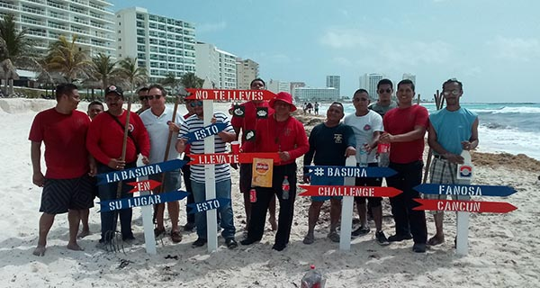

For more than 50 years, FANOSA® has been distinguished by its concern for people and their integral development, as well as for the environment and the community in general.
This social responsibility is reflected in our employees, clients, and suppliers as well as in the communities where we have a presence.
FANOSA® has a serious commitment to the environment, and is aware that all our activities have to be planned and developed at all times, taking care of the environment and the impact we can cause to it. Thus, because of our commitment we will be able to inherit a better planet to future generations.
Develop in all our collaborators the efficient use of non-renewable resources and minimize the generation of waste in our operations, as well as reduce atmospheric emissions and wastewater discharges.
Minimize and avoid as much as possible environmental impacts resulting from our activities.
Minimize and avoid as much as possible environmental impacts resulting from our activities.
Involve, train, and hold responsible the employees who are part of the environmental commission so they respect, share, and apply our policies, not only FANOSA® employees but also our suppliers.
EPS contribution to reduce CO2 emissions to the environment.
An Uplift obtain from a good architectural design and the correct selection of insulating materials, multiple benefits are obtained, not only for the user, achieving thermal comfort and economic savings; but also for the rest of the population as it contributes to caring for the planet we inhabit. Our products are designed to provide thermal insulation, this means lower energy consumption.
A house with thermal insulation of Expanded Polystyrene (EPS) reduces greenhouse gas emissions by 75% compared to the same house without insulation *, find with your advisor the FANOSA® product that best insulates your construction.
At FANOSA® we have recycling centers in each factory that receive Expanded Polystyrene (EPS), we also use alternative energy sources